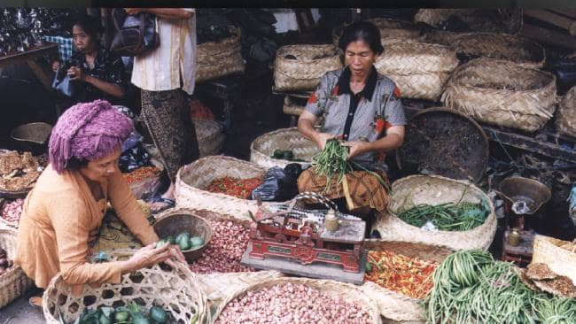

My mom emigrated to the U.S in 1991, bringing a vast knowledge of spices and plants with her. As a child she would sell herbs and spices in the market before and after school, trying to lift her parents of financial burdens. This unlocked a talent that was waiting for her, a talent with flavors.
In New York, she quickly and easily achieved "Best Cook" title in our tiny yet highly opinionated community. Inevitably, my high school friends also discovered my mom's gift for food and also joined her fan base. Which was actually a surprise to me! I never thought any American would like Indonesian food, let alone traditional subethnic foods. So here we are today, spreading our passion and love for food.
